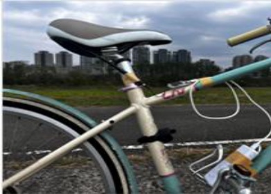
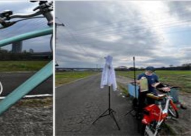
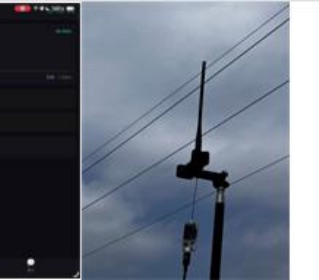
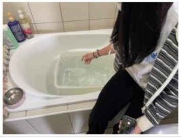
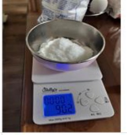
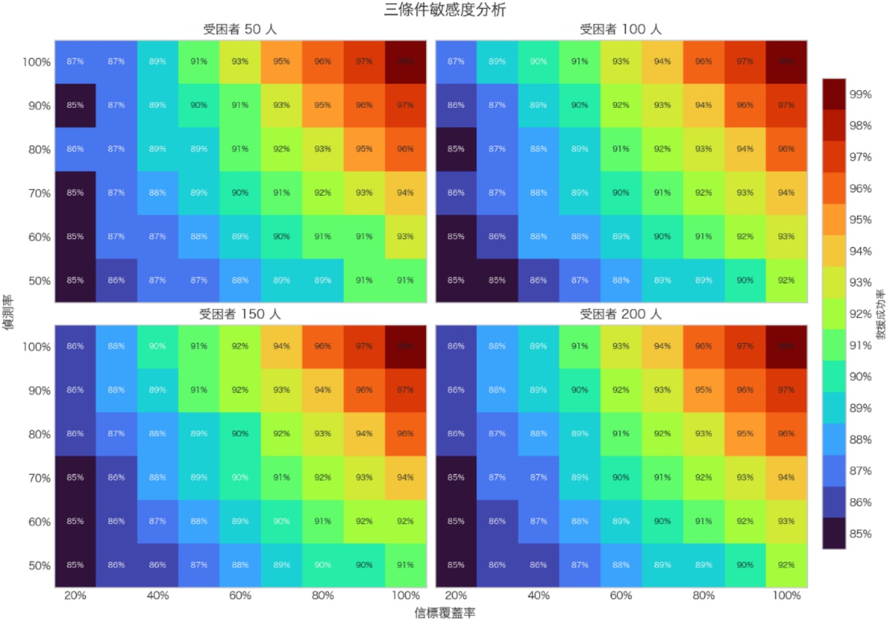

本頁整理 LinkGuard-E（地震搜救模式）於第 66 屆全國中小學科學展覽會作品說明書中的實驗設計、數據與討論： 實驗一在強電磁干擾場域測試 923 MHz LoRa 的抗干擾能力與距離；實驗二以鹽水等效模型量化穿透衰減； 實驗三以 1,000 次配對蒙地卡羅模擬估算搜救效率。
This page collects the experimental design, data and discussion of LinkGuard-E (earthquake rescue mode) from our report to the 66th National Primary and High School Science Fair. Experiment 1 tests 923 MHz LoRa range under strong electromagnetic interference, Experiment 2 quantifies penetration loss with a saline-equivalent model, and Experiment 3 estimates rescue efficiency with 1,000 paired Monte Carlo trials.
鋼筋混凝土建築倒塌後，密集的鋼筋網格形成法拉第籠效應：當金屬網格孔徑小於訊號波長的 1/10 時， 電磁波會被大幅衰減。4G／5G 與 Wi-Fi 的波長接近或小於鋼筋網孔徑（約 15–20 cm），受困者手機因此迅速失去對外通訊，成為「數位孤島」。
When a reinforced-concrete building collapses, the dense rebar mesh acts as a Faraday cage: once the mesh aperture is smaller than about one tenth of the wavelength, radio waves are heavily attenuated. 4G/5G and Wi-Fi wavelengths are close to or shorter than the 15–20 cm mesh aperture, so victims' phones quickly lose contact and become "digital islands".
| 通訊技術Technology | 頻率Frequency | 波長Wavelength | 相對於 15–20 cm 鋼筋網格Relative to a 15–20 cm rebar mesh |
|---|---|---|---|
| 4G LTE | 1800 MHz（台灣常用頻段）1800 MHz (common band in Taiwan) | 16.7 cm | 接近網格孔徑，顯著衰減Close to the aperture; strong attenuation |
| Wi-Fi / BLE | 2.4 GHz | 12.5 cm | 小於網格孔徑，幾乎完全屏蔽Smaller than the aperture; almost fully shielded |
| LoRa（LinkGuard-E） | 923 MHz（ISM／AS923） | 約 33 cm≈33 cm | 為孔徑的 1.6–2 倍，可藉繞射穿透網格空隙1.6–2× the aperture; diffracts through the mesh gaps |
依 Rayleigh 準則，障礙物尺寸小於 λ/4 時繞射效應主導。923 MHz 波長（33 cm）與 15 cm 障礙物之比為 2.2，繞射損耗較低；2.4 GHz 的波長已小於障礙物尺寸，繞射損耗顯著增加。
By the Rayleigh criterion, diffraction dominates when the obstacle is smaller than λ/4. The 33 cm wavelength at 923 MHz is 2.2× a 15 cm obstacle, so diffraction loss stays low; at 2.4 GHz the wavelength is already shorter than the obstacle and loss rises sharply.
LoRa 採用線性調頻擴頻（Chirp Spread Spectrum）。依 Semtech SX1262 規格，SF12 設定下可在 −20 dB SNR 條件下解碼，使系統在複雜電磁干擾環境中維持通訊——這正是實驗一要驗證的場景。
LoRa uses Chirp Spread Spectrum. Per the Semtech SX1262 datasheet, SF12 can decode at −20 dB SNR, keeping the link alive in noisy electromagnetic environments — exactly the scenario Experiment 1 tests.
Motley 與 Keenan（1988）的室內損耗模型、Rappaport（2002）對 RC 樓板的說明，以及 ITU-R P.2040-1 所列建材參數，共同構成實驗二「鹽水等效模型」換算樓層數的理論基礎。
The Motley–Keenan (1988) indoor loss model, Rappaport's (2002) treatment of concrete floors and the building-material parameters in ITU-R P.2040-1 together form the theoretical basis for converting Experiment 2's saline losses into equivalent floors.
地震後現場可能有高壓電線塌落、變電設備短路與多部應急車輛無線電同時開機，頻譜環境混亂。 我們刻意選擇背景電磁干擾最強的場域進行極限測試，而不是在乾淨的實驗室裡量漂亮的數字。
After an earthquake the scene may include downed high-voltage lines, shorted substations and dozens of emergency radios keyed at once. We deliberately tested in the noisiest environments we could find instead of measuring clean numbers in a lab.



實驗室測的數字通常很漂亮，但真實災害現場不是那樣。地震後可能有高壓電線塌落、變電設備短路、各種應急車輛無線電同時開機。台鐵列車經過會產生突波雜訊、高鐵高架橋下有持續性電力干擾、高壓電塔有強烈低頻輻射——三者剛好涵蓋不同類型的干擾。
Lab numbers usually look good, but a real disaster scene does not. After an earthquake there may be downed power lines, shorted substations and many emergency radios transmitting at once. Passing trains create surge noise, HSR viaducts carry continuous power interference, and high-voltage towers radiate strong low-frequency fields — three different classes of interference in one test.
兩個原因。923 MHz 波長 33 cm，比 2.4 GHz 的 12.5 cm 長約 2.6 倍，繞射能力強；加上 LoRa 的 CSS 擴頻可以在訊號比雜訊弱的情況下解碼。物理上，波長與障礙物尺寸之比越大，繞射能力越強（Rayleigh 準則：障礙物尺寸 < λ/4 時繞射效應主導）。
Two reasons. The 33 cm wavelength at 923 MHz is about 2.6× longer than the 12.5 cm of 2.4 GHz, so it diffracts far better; and LoRa's CSS modulation decodes even when the signal is weaker than the noise. Physically, the larger the wavelength-to-obstacle ratio, the stronger the diffraction (Rayleigh criterion: diffraction dominates when the obstacle is smaller than λ/4).
它是視距加上少量遮蔽的結果，不是穿透廢墟的距離。所以這個數字要解讀成「指揮車與外圍中繼節點之間的覆蓋範圍」，不是「能直接收到深埋受困者的訊號」。另外干擾源強度沒有量化，我們只能說「在台鐵附近」，沒辦法回答「干擾要強到什麼程度才會失效」。
It is a line-of-sight result with light obstruction, not a through-rubble distance. Read it as the coverage between the command vehicle and outer relay nodes, not as the range at which a deeply buried victim can be heard. The interference strength was not quantified either: we can say "next to the railway", but not "how strong the interference must be before the link fails".
地震搜救時，受困者可能位於地下室或倒塌樓層，無線訊號必須穿過建築物與瓦礫。 我們以不同濃度的鹽水模擬不同程度的訊號衰減，觀察 923 MHz LoRa 的 RSSI、SNR 與封包成功率如何變化， 並回答三個問題：鹽水濃度增加時衰減是否同步增加？訊號弱化到什麼程度仍可解碼？dB 衰減量能否換算成直觀的「等效樓層數」？
Earthquake victims may be trapped in basements or collapsed floors, so the radio link must pass through structure and rubble. We used saline of increasing concentration as a controllable attenuator and recorded RSSI, SNR and packet success at 923 MHz to answer three questions: does loss rise with concentration, how weak can the signal get before decoding fails, and can dB loss be converted into an intuitive "equivalent number of floors"?


鹽水不是用來複製水泥，而是一種可控制、可重複的衰減介質：鹽水中的離子會消耗穿過的電磁波能量， 因此可以模擬訊號穿過建築材料時被削弱的現象。換算採用 Motley–Keenan 室內損耗模型：在 923 MHz 頻段， 每穿透一層標準鋼筋混凝土樓板約可估計為 22 dB 的衰減。
Saline is not a stand-in for concrete; it is a controllable, repeatable attenuating medium. Ions in the water absorb part of the wave's energy, mimicking how signals weaken through building materials. Conversion uses the Motley–Keenan indoor loss model: at 923 MHz, one standard reinforced-concrete floor is estimated at about 22 dB of loss.
Motley–Keenan 模型原設計適用於訊號穿透完整牆壁或樓板的室內情境，與廢墟的多路徑散射環境不同。 本研究將其作為初步近似，換算所得「等效樓層數」為概念性估算而非精確預測。
The Motley–Keenan model was designed for signals passing through intact walls and floors, not the multipath scattering of rubble. We use it as a first approximation, so "equivalent floors" is a conceptual estimate rather than a precise prediction.
依業界經驗值與文獻整理（參考 Rappaport, 2002；ITU-R P.1238 室內傳播建議書）。
Compiled from industry experience and literature (Rappaport, 2002; ITU-R P.1238 indoor propagation recommendation).
| 樓板／牆體類型Floor / wall type | 厚度Thickness | 訊號衰減量Signal loss | 衰減原因與特性Cause / characteristics |
|---|---|---|---|
| 標準 RC 樓板Standard RC floor slab | 15 cm | 約 15–25 dB≈15–25 dB | 混凝土與鋼筋網造成衰減Concrete and rebar mesh |
| 中空樓板Hollow-core slab | 22.5–30 cm | 約 20–30 dB≈20–30 dB | 厚度增加且鋼筋密集Thicker with dense rebar |
| 管線匯集區Utility / pipe zone | 18–20 cm | 約 25–35 dB≈25–35 dB | 鋼筋與管線屏蔽Rebar plus metal piping |
| SC／SRC 鋼承板SC / SRC steel deck | 1.2 mm 鋼板1.2 mm steel plate | 約 30–45+ dB≈30–45+ dB | 金屬底板近完全屏蔽Metal deck shields almost completely |
| 輕隔間牆Light partition wall | 8–10 cm | 約 3–8 dB≈3–8 dB | 低密度材質易於穿透Low-density material, easy to penetrate |
| 磚牆Brick wall | 12–24 cm | 約 8–15 dB≈8–15 dB | 磚塊與砂漿水分吸收Absorption by brick and mortar moisture |
0.9%、2.1% 與 3.0% 為主要觀察區間，分別代表穩定傳輸、接近底噪與極限解碼狀態。雙向量測：水中發射→空氣中接收，以及空氣中發射→水中接收。
0.9%, 2.1% and 3.0% are the key observation points: stable transmission, near the noise floor, and the decoding limit. Both directions were measured: transmitter in water → receiver in air, and transmitter in air → receiver in water.
| 鹽水濃度Salinity | 水中→空氣中 RSSI (dBm)Water → air RSSI (dBm) | 距離 (m)Distance (m) | 空氣中→水中 RSSI (dBm)Air → water RSSI (dBm) | 距離 (m)Distance (m) | 對應樓層Equivalent floor |
|---|---|---|---|---|---|
| 0% | −63 | 16 | −51 | 6 | 自由空間基準Free-space baseline |
| 0.30% | −59 | 11 | −72 | 35 | ↓ |
| 0.60% | −71 | 33 | −76 | 50 | ↓ |
| 0.90% | −82 | 84 | −88 | 140 | 約地下 1 層樓板≈1 floor below grade |
| 1.20% | −95 | 255 | −95 | 255 | ↓ |
| 1.50% | −100 | 391 | −97 | 303 | ↓ |
| 1.80% | −102 | 464 | −98 | 330 | ↓ |
| 2.10% | −113 | 1200 | −107 | 710 | 約地下 2 層樓板≈2 floors below grade |
| 2.40% | −121 | 2300 | −117 | 1700 | ↓ |
| 2.70% | −120 | 2200 | −117 | 1700 | ↓ |
| 3.00% | −126 | 3600 | −124 | 3000 | 約地下 3 層樓板（極限）≈3 floors below grade (limit) |
「距離」欄為原報告依 RSSI 換算的等效距離。換算採 Motley–Keenan 室內模型，每層 RC 樓板以 22 dB 計；三項誤差來源：（1）廢墟瓦礫分布不均，實際衰減可能偏高或偏低 ±30–50%；（2）鹽水為均質介質，RC 結構中鋼筋網格的額外屏蔽未計入；（3）模型原設計為視距場景，廢墟多路徑環境可能使同一衰減量對應更少樓層。因此「地下 3 層」為概念性上界，不作為精確預測。
The "distance" columns are the equivalent distances converted from RSSI in the original report. Floors are converted with the Motley–Keenan indoor model at 22 dB per RC floor. Three error sources apply: (1) uneven rubble can shift actual loss by ±30–50%; (2) saline is homogeneous, so the extra shielding of the rebar mesh is not included; (3) the model assumes line-of-sight, and multipath in rubble may map the same loss to fewer floors. "3 floors below grade" is therefore a conceptual upper bound, not a precise prediction.
鹽水濃度達 3.0% 時，15 cm 水層造成約 63 dB 衰減，顯示混凝土或瓦礫環境會大幅增加通訊難度。
At 3.0% salinity, 15 cm of water produced about 63 dB of loss — a reminder of how much concrete and rubble raise the difficulty of the link.
波長約 33 cm，較 2.4 GHz Wi-Fi（12.5 cm）長約 2.6 倍，較能繞過障礙物，也不易被小尺度結構完全阻擋。
The ≈33 cm wavelength is about 2.6× that of 2.4 GHz Wi-Fi (12.5 cm), so it bends around obstacles and is not fully blocked by small structural features.
濃度約 2.4% 以上時，RSSI 在 −117 至 −120 dBm 附近震盪，表示訊號已接近接收靈敏度與環境雜訊邊界。
Above about 2.4% salinity, RSSI oscillates around −117 to −120 dBm, indicating the signal is at the edge of receiver sensitivity and ambient noise.
以「RSSI 實測解碼門檻」作為安全裕度：距離門檻不到 6 dB 時，系統自動提醒增加中繼節點或調整設備位置。
The measured decoding threshold defines a safety margin: when RSSI is within 6 dB of it, the system prompts operators to add a relay node or reposition equipment.
可分為「穩定區」與「極限區」。每組進行 3 輪、共 300 筆封包測試，RSSI 標準差約 ±3 dB。穩定區對應 0.9% 鹽水濃度，RSSI 平均約 −82 dBm，封包可穩定回傳，適合一般搜救定位與生理資料傳輸；極限區對應 3.0% 鹽水濃度，RSSI 平均約 −126 dBm，已接近晶片解碼邊緣，後續仍需搭配封包錯誤率（PER）進一步判斷可靠度。
Two regimes emerge. Each concentration was run for 3 rounds and 300 packets with an RSSI standard deviation of about ±3 dB. The stable regime at 0.9% salinity averages about −82 dBm with reliable packet delivery, suitable for locating victims and relaying vital signs. The limit regime at 3.0% averages about −126 dBm, at the edge of the chip's decoding ability, and needs packet error rate (PER) data to judge reliability further.
實體 RC 結構測試需要地下三層樓以上的場域，且不得為地下停車場，以避免 923 MHz 訊號干擾車輛 eTag／ETC 或 RFID 系統（兩者皆使用 920–928 MHz 頻段）。台灣符合條件且可長時間進場測試的場域有限，因此先採用鹽水模型：雖然無法完全代表 RC 結構，但濃度可控制、條件可重複，適合初步建立衰減與解碼極限的關係。實地 RC 試驗規劃見「部署方案」頁。
A real RC test needs a site at least three floors underground that is not a car park, because eTag/ETC tolling and industrial RFID both use 920–928 MHz and could interfere with 923 MHz LoRa. Few such sites in Taiwan allow extended access, so we started with the saline model: it does not fully represent RC structure, but concentration is controllable and repeatable, which is what a first loss-versus-decoding-limit relationship needs. The planned RC field trials are described on the Deployment page.
用 Motley–Keenan 模型，每穿透一層 RC 樓板大約衰減 22 dB，把總衰減量（3.0% 時約 63 dB）除以 22 得到約 2.9 層。但這個模型原本設計給完整牆壁，廢墟的多路徑散射不在模型範圍內，所以「地下 3 層」是方便理解的換算，不是精確預測。
With the Motley–Keenan model each RC floor costs about 22 dB, so the total loss at 3.0% (about 63 dB) divided by 22 gives roughly 2.9 floors. The model was built for intact walls, and rubble multipath is outside its scope, so "3 floors" is a convenient conversion rather than a precise prediction.
RSSI 落在 −117 到 −120 dBm，已接近晶片解碼極限。這告訴我們不能依賴單一信標傳到極遠處，超過這個門檻就必須加中繼節點。系統流程中因此加入「安全裕度」設計：距離解碼門檻不到 6 dB 時自動提醒。
RSSI between −117 and −120 dBm is right at the chip's decoding limit. It tells us not to rely on a single beacon over an extreme path; beyond this threshold a relay node is required. That is why the system flow includes a safety margin: it warns automatically when RSSI is within 6 dB of the decoding threshold.
傳統搜救多採網格盲掃，通常要抵達受困者附近後才知道其生理狀況。本實驗以電腦情境模擬估算 LinkGuard-E 介入後， 是否能提升 72 小時內的救援成功率，以及最有價值的介入時機。本章定位為情境模擬，不是實際災害現場的效益量測， 未來仍需消防或搜救單位實地演練驗證。
Conventional search sweeps the site in a grid and only learns a victim's condition on arrival. This experiment uses computer simulation to estimate whether LinkGuard-E raises the 72-hour rescue success rate and when its intervention matters most. It is a scenario simulation, not a measurement from a real disaster, and still needs validation in drills with fire and rescue units.
進行 1,000 次配對試驗：每次以同一批隨機生成的受困者，同時跑「傳統盲掃組」與「LinkGuard-E 介入組」，比較救援成功率與完成救出時間。統計採配對 t-test、Wilcoxon signed-rank test 與配對版 Cohen's dz。
1,000 paired trials: each trial generates one random set of victims and runs both the blind-search control and the LinkGuard-E arm on it, comparing rescue success and time to extraction. Statistics use a paired t-test, the Wilcoxon signed-rank test and paired Cohen's dz.
受困者依檢傷概念分為紅燈、黃燈、綠燈，比例設為 30%／40%／30%（研究情境假設，非 START 檢傷規定）。生存時間採 Weibull 分佈，形狀參數 k 均大於 1，表現受困越久風險越高；尺度參數 λ 由中位生存時間反推。
Victims are split into red, yellow and green tags at 30% / 40% / 30% (a scenario assumption, not the START protocol). Survival time follows a Weibull distribution with shape k above 1, so risk grows with time trapped; scale λ is back-calculated from the median survival time.
對照組：5 組搜救隊以 150 m³/h·隊掃描 13,500 m³ 建築體積，發現後目視檢傷；提取時間紅燈 0.6 h、黃／綠燈 0.3 h。LinkGuard-E 組：具備信標者以 Pdetect = 0.85 被偵測，依 BPM 等生理資料排序、優先派遣紅燈個案，搜索、定位與移動速率設為基準 2 倍（文獻範圍 2–3 倍的保守下界）；未部署信標或未被偵測者仍回到盲掃流程。
Control: 5 teams sweep a 13,500 m³ building at 150 m³/h per team, triage by sight on discovery, and extract in 0.6 h (red) or 0.3 h (yellow/green). LinkGuard-E: victims with a beacon are detected with Pdetect = 0.85, ranked by heart rate and other vitals so red tags are dispatched first, with search, localisation and movement at 2× the baseline (the conservative lower bound of the 2–3× range in the literature); victims without a beacon, or not detected, fall back to the blind sweep.
| 檢傷Tag | 中位生存時間Median survival | k | λ |
|---|---|---|---|
| ● 紅燈Red | 9 h | 2.0 | 10.81 |
| ● 黃燈Yellow | 36 h | 2.5 | 41.68 |
| ● 綠燈Green | 120 h | 3.0 | 135.59 |
Pdetect 設為 0.85 的理由：實驗二顯示 LoRa 在穩定區（RSSI 約 −82 dBm）封包成功率穩定，但考量廢墟訊號遮蔽、設備姿態偏移與多路徑干擾，主動降低偵測機率作為保守假設，而非直接採用實驗室封包成功率；此值尚未經實地 PDR 量測校正，故另以敏感度分析（0.50–1.00）檢驗結論穩健性。
Why 0.85: Experiment 2 showed stable packet success in the stable regime (RSSI ≈ −82 dBm), but shadowing, device orientation and multipath in rubble argue for a conservative value rather than the lab success rate. It has not yet been calibrated against field packet-delivery measurements, so a sensitivity sweep from 0.50 to 1.00 checks robustness.
各時間窗累積救援成功率（對照組 vs. LinkGuard-E 組），折線為 Weibull 模型下無救援介入的累積死亡率。
Cumulative rescue success by time window (control vs. LinkGuard-E); the line shows cumulative mortality under the Weibull model with no rescue.
LinkGuard-E 的最大價值出現在災後 6–12 小時。12 小時時 LinkGuard-E 組領先 28.51 個百分點，約為 72 小時終點差距的 3 倍。 9 小時剛好接近紅燈傷患的中位生存時間，此時 LinkGuard-E 組救援成功率 72.55%、對照組 44.32%，差距約 28 個百分點； 平均完成救出時間從 8.49 小時縮短至 4.46 小時。系統確實把救援提前到紅燈傷患最關鍵的時間窗。
LinkGuard-E's greatest value appears 6–12 hours after the event. At 12 hours the LinkGuard-E arm leads by 28.51 percentage points, about three times the gap at the 72-hour endpoint. Nine hours is close to the median survival time of red-tag victims; at that point LinkGuard-E reaches 72.55% versus 44.32% for the control, a gap of about 28 points, and mean time to extraction falls from 8.49 to 4.46 hours. The system moves rescue into the window that matters most for red-tag victims.
四子圖呈現受困者規模（50／100／150／200 人）× 信標覆蓋率（20–100%）× 偵測機率（50–100%）的三條件交叉熱力圖，色階為救援成功率。
Four panels cross victim scale (50 / 100 / 150 / 200) × beacon coverage (20–100%) × detection probability (50–100%); colour shows rescue success rate.

以 200 人規模為例，覆蓋率由 20% 提升到 100%，救援成功率增加約 12.5 個百分點；偵測率由 50% 提升到 100%，僅增加約 5.0 個百分點。沒戴信標的人，偵測率再高也偵測不到。
At the 200-victim scale, raising coverage from 20% to 100% adds about 12.5 percentage points, while raising detection from 50% to 100% adds only about 5.0. A victim without a beacon cannot be detected no matter how good the receiver is.
最差條件（覆蓋率 20% × 偵測率 50%）仍維持約 84–86% 救援率，熱力圖上未出現比傳統盲掃更差的區域，代表系統下行風險受控。
Even the worst cell (20% coverage × 50% detection) keeps success at about 84–86%, and no region of the heat map falls below the blind-search baseline, so the downside is bounded.
無救援介入時，72 小時自然存活率為紅燈 0%、黃燈 2%、綠燈 86%，加權約 26.6%。對照組與 LinkGuard-E 組分別達 82.83% 與 91.54%，顯示差異主要來自「搜救行動本身」與「信標引導優先派遣」的介入效果。
With no rescue, 72-hour natural survival is 0% (red), 2% (yellow) and 86% (green), about 26.6% weighted. The control and LinkGuard-E arms reach 82.83% and 91.54%, so the difference comes from the rescue effort itself and from beacon-guided priority dispatch.
| 參數Parameter | 數值Value |
|---|---|
| 對照組平均救援率Control mean success | 82.83% |
| LinkGuard-E 組平均救援率LinkGuard-E mean success | 91.54% |
| 配對差值平均 MdMean paired difference Md | ＋8.71 個百分點（0.0871）+8.71 pp (0.0871) |
| 配對差值標準差 SDdSD of paired difference SDd | 0.0463（約 4.63 個百分點）0.0463 (≈4.63 pp) |
| 配對樣本數 nPaired samples n | 1,000 |
依 Cohen（1988）分類，dz ≥ 0.8 屬大效應、dz ≥ 1.2 屬極大效應；本研究 dz = 1.880 遠超過極大效應門檻，且推得的 t 值與配對 t-test 結果一致。
By Cohen's (1988) convention dz ≥ 0.8 is large and dz ≥ 1.2 very large; dz = 1.880 is well beyond that threshold, and the derived t matches the paired t-test result.
結果與既有 USAR 模擬研究方向相近（Hooshangi & Alesheikh, 2018 指出動態任務分派可降低搜救時間與死亡人數），但因模型與指標不同，數值不宜直接比較。 本研究的特色在於把鹽水模型所得的 RSSI 結果轉換為系統層的偵測機率假設，並採較保守的數值以保留廢墟中多路徑、遮蔽與干擾的風險。
The direction agrees with earlier USAR simulation work (Hooshangi & Alesheikh, 2018, showed dynamic task assignment reduces search time and deaths), though differing models and metrics rule out direct numeric comparison. What is distinctive here is converting the saline-model RSSI results into a system-level detection probability, kept deliberately conservative to reflect multipath, shadowing and interference in rubble.
拆開看就會發現重點：紅燈傷患從 47.53% 提升到 73.39%，增加 25.85 個百分點；黃燈和綠燈本來就比較容易救得到。這套系統的價值不是「讓所有人都被救得更快」，而是「讓最該被先救的人真的被先救」。
Break it down and the point is clear: red-tag victims rise from 47.53% to 73.39%, a 25.85-point gain, while yellow and green tags were already likely to be rescued. The system's value is not "everyone gets rescued faster" but "the people who must be rescued first actually are".
因為 9 小時剛好是紅燈傷患的中位生存時間。這個時間點 LinkGuard-E 組救援率 72.55%，對照組只有 44.32%。所以系統「什麼時候運作」比「最終效益多少」更關鍵，部署慢一小時就可能少救幾個人。
Because nine hours is the median survival time of red-tag victims. At that point LinkGuard-E reaches 72.55% versus 44.32% for the control. When the system is running matters more than the final margin — every hour of delayed deployment can cost lives.
覆蓋率從 20% 提到 100% 增加約 12.5 個百分點，偵測率從 50% 提到 100% 只增加 5 個百分點。原因是沒戴信標的人偵測率再高也偵測不到。所以與其花錢把偵測率從 85% 推到 95%，不如擴大信標部署。
Coverage from 20% to 100% adds about 12.5 points; detection from 50% to 100% adds only 5. A victim without a beacon cannot be detected at any detection rate. Spending to push detection from 85% to 95% is therefore less effective than putting beacons on more people.
不能直接套用到真實災害現場。Pdetect、搜索速率倍率、Weibull 生存時間都沒有用真實案例校準，也沒考慮餘震、火災、疲勞這些因素。這個數字是方向性證據，代表「值得繼續做」，不是「一定有效」。
Not as a prediction for a real disaster. Pdetect, the search-speed multiplier and the Weibull survival times are not calibrated against real cases, and aftershocks, fire and fatigue are not modelled. The number is directional evidence that the approach is worth pursuing, not proof that it will work.
這份研究最重要的不是任何一個數據，而是把幾件事接起來：訊號能不能在干擾下傳得遠、能不能穿透結構、傳到了之後能不能改善救援、改善的方式符不符合實務。通訊穿不過去，後面的效益就無從談起；效益模型不對，通訊做得再好也沒意義；不符合實務，做完也沒人用。
The most important result is not any single number but the chain it closes: can the signal travel far under interference, can it penetrate structure, does getting through improve rescue, and does the improvement fit real practice. If the link fails, no benefit follows; if the benefit model is wrong, a good link means nothing; if it does not fit practice, nobody will use it.
在台鐵、高鐵、高壓電塔的強電磁干擾環境下，923 MHz LoRa 仍能穿透雜訊底層，最大有效通訊距離 900 m；2.4 GHz 在多遮蔽與強干擾環境多在數十公尺內即大幅衰減。CSS 擴頻搭配高增益天線確實能應對真實災害現場的複雜射頻環境。
Next to railways, HSR viaducts and high-voltage towers, 923 MHz LoRa still decoded above the noise floor with a maximum effective range of 900 m, whereas 2.4 GHz typically fades within tens of metres under heavy obstruction and interference. CSS modulation with a high-gain antenna handles a real scene's messy RF environment.
923 MHz LoRa 在 3.0% 鹽水濃度下仍可成功解碼，RSSI 約 −126 dBm，接近 SX1262 晶片解碼極限；衰減量約相當於 Motley–Keenan 模型估算的 2.9 層 RC 樓板（每層 22 dB）。此為概念性上界，確切數值需以實體 RC 場域測試校正。
At 3.0% salinity 923 MHz LoRa still decoded at about −126 dBm, near the SX1262 limit; the loss corresponds to roughly 2.9 RC floors in the Motley–Keenan model (22 dB per floor). This is a conceptual upper bound to be calibrated against real RC structures.
蒙地卡羅模擬顯示整體救援成功率從 82.83% 提升到 91.54%（+8.71 個百分點），紅燈傷患從 47.53% 提升到 73.39%（+25.85 個百分點），平均完成救出時間從 8.49 小時縮短到 4.46 小時。t = 59.42，p < 0.001，Cohen's dz = 1.880。
Monte Carlo simulation raises overall rescue success from 82.83% to 91.54% (+8.71 pp) and red-tag success from 47.53% to 73.39% (+25.85 pp), while mean time to extraction falls from 8.49 to 4.46 hours; t = 59.42, p < 0.001, Cohen's dz = 1.880.
系統最大的效益集中在災後 6–12 小時，對應紅燈傷患約 9 小時的中位生存時間；9 小時時 LinkGuard-E 組救援率 72.55%，傳統盲掃組 44.32%，差距達 28 個百分點。
The largest benefit falls 6–12 hours after the event, matching the ≈9-hour median survival of red-tag victims; at 9 hours LinkGuard-E reaches 72.55% against 44.32% for the blind sweep, a 28-point gap.
敏感度分析顯示信標覆蓋率是最關鍵的因素，建議部署門檻為覆蓋率 ≥ 40%、偵測機率 ≥ 75%。即使最差條件下系統仍維持 84–86% 救援率，沒有比傳統盲掃更差，下行風險可控。
Sensitivity analysis shows beacon coverage is the decisive factor; the recommended threshold is coverage ≥ 40% with detection ≥ 75%. Even the worst case keeps 84–86% success and never falls below the blind sweep, so the downside is bounded.
消防訪談確認系統設計方向符合現場需求，特別是 ICS 分層架構、Offline First 離線運作與大按鈕單手操作，並獲受訪人員肯定其應用潛力。實驗告訴我們系統「能做到什麼」，訪談告訴我們系統「應該做什麼」。
Firefighter interviews confirmed the design direction — especially the ICS role hierarchy, offline-first operation and large one-handed controls — and the interviewees endorsed its potential. The experiments show what the system can do; the interviews show what it should do.
| 名稱Item | 規格Spec | 數量Qty | 備註（用途）Note |
|---|---|---|---|
| LoRa ESP32 | Semtech SX1262（LoRa 923 MHz） | 4 | 信標、接收端與中繼節點Beacon, receiver and relay nodes |
| Arduino LoRa | HTCC-AB02 | 1 | |
| 射頻寬帶放大器Broadband RF amplifier | 0.1–2000 MHz，增益 30 dB0.1–2000 MHz, 30 dB gain | 1 | |
| 射頻天線RF antenna | 高增益雙頻 923 MHzHigh-gain dual-band 923 MHz | 1 | |
| 顯示螢幕Display | OLED 0.96" | 3 | |
| 智慧手錶Smartwatch | Garmin vívosmart 5 | 1 | BLE Heart Rate Service 心率來源BLE Heart Rate Service source |
| 電源Power bank | 20,000 mAh | 1 | |
| 塑膠箱Plastic tank | 30 × 30 × 45 cm | 1 | 實驗二Experiment 2 |
| 3D 列印耗材3D-printing filament | ABS / ASA+ / PETG / PLA | 各 1 kg1 kg each | 耐高溫／耐候／高韌性／基礎建模Heat-resistant / weather-resistant / tough / general |
| 食鹽、自來水Salt, tap water | 1000 g / 3 L | 實驗二鹽水等效模型Saline-equivalent model | |
| 垂直燈架Light stand | 2 m 攝影架2 m photo stand | 1 | 實驗一接收天線架設Receiver antenna mount, Experiment 1 |
| 量具Measuring tools | 捲尺、游標卡尺Tape measure, calipers | 1 |
輔助設備：MacBook Pro M5 ×2、MacBook Air M1、iPad Air M3／M2、Galaxy Tab S7+、iPhone 12 Pro Max／13、Xiaomi 14T Pro、Samsung Galaxy A33、K1C 3D 列印機。軟體：Autodesk Fusion 360、Shapr3D、Visual Studio Code、Arduino IDE。
Supporting equipment: MacBook Pro M5 ×2, MacBook Air M1, iPad Air M3/M2, Galaxy Tab S7+, iPhone 12 Pro Max/13, Xiaomi 14T Pro, Samsung Galaxy A33, K1C 3D printer. Software: Autodesk Fusion 360, Shapr3D, Visual Studio Code, Arduino IDE.